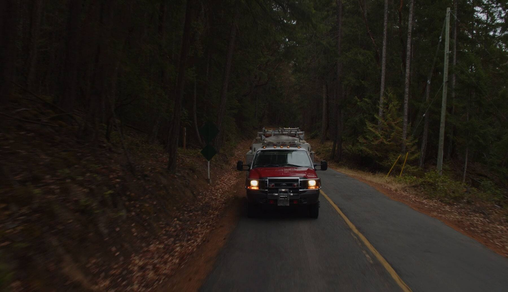
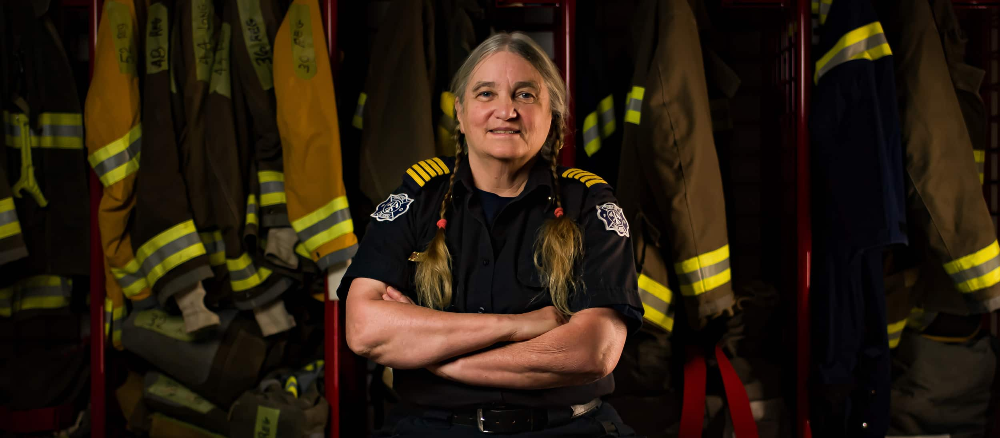
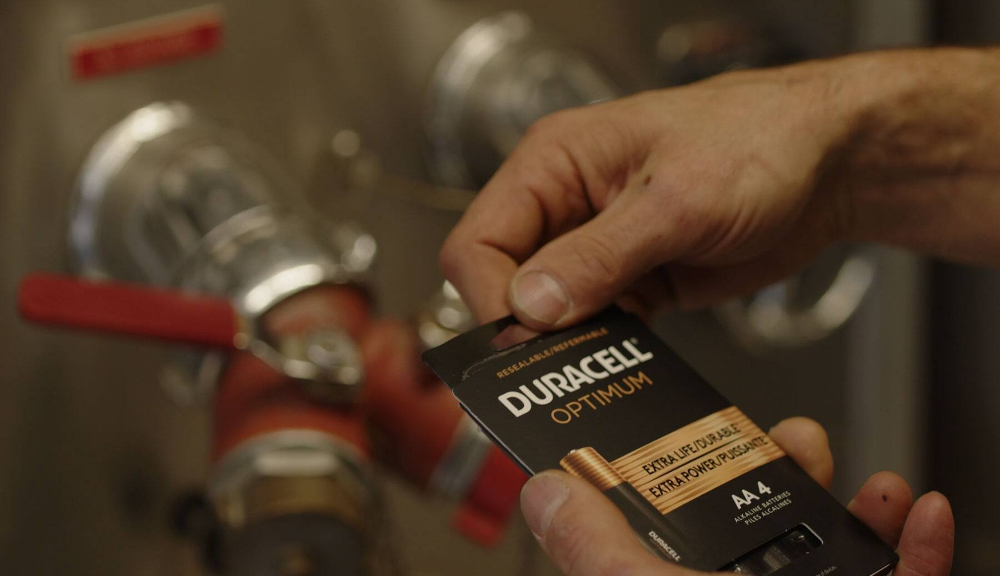

What inspires us to give back? And, what calls some individuals to a level of service that goes above and beyond what most people would ever consider giving? For Fire Chief Jeannine Caldbeck, the Volunteer Chief on remote Thetis Island, B.C. and the recipient of this year’s Lifetime Achievement Award presented by Duracell and the Canadian Volunteer Fire Services Association (CVFSA), it’s community service. For Jeannine, helping others is the best way to show her commitment and devotion to the homeland she’s lived in for over 40 years.
As a single parent in the 1980s and 1990s, Jeannine devoted all her time raising a child without much help on Thetis Island - a small community in the Gulf Islands of B.C. off Vancouver Island. The moment her child was old enough, Jeannine signed up to volunteer for Thetis’ Fire Department. Despite “knowing nothing” about the life of a firefighter, she thought it would be a great way to give back to the community she loves so much.

Since then, a lot has changed, and Jeannine has been serving her community as a firefighter on Thetis Island for over 25 years. She rose to the rank of Chief of Thetis Island’s volunteer fire department in 2005, and leads a lean, but devoted team of volunteers who don’t get paid, but commit themselves to keeping their community safe. She says she’s proud of what the community has allowed her to accomplish, including advocating for building a brand new fire station on the Island. She feels a glowing sense of respect for her fellow firefighters that serve with her on Thetis. “They say it’s a calling… but most often no one calls you to become a firefighter” Jeannine jokes. “It’s people’s own commitment to service and devotion to their communities that drive them into the profession and lead them to sign up on their own accord.”
With Thetis Island being a remote community surrounded by water, response to emergencies is a bit different than on the mainland. A community of under 400 people that swells in the summertime with cottagers, Thetis Islands Fire Department is the first and the last line of defense for the local community when it comes to emergencies. Whenever fire happens, the Department’s first priority is to minimize damage and ensure they can contain the fire to protect the entire island - because it could take hours for the backup support to arrive. If a structural fire or forest fire gets out of control, there’s a real threat of losing all houses and trees on the island – and the Department takes it very seriously.

When a member of the community is hurt because of a fire emergency, the Fire Department must liaise with paramedics on Vancouver Island who take time to reach them by a water taxi. With this in mind, Jeannine and her department are always looking at preventative measures of fire safety as a practice that matters to all and should not be taken lightly. On a small island, knowing about risks and prevention best practices is everyone’s responsibility. It’s easier to prevent a fire from happening completely, than responding to an out-of-control blaze that could threaten everyone’s livelihood and safety.
For firefighters themselves, a key part of preparation is having reliable tools and equipment to do their job properly when a dangerous situation arises.
Firefighters across the country know firsthand about the importance of a trusted battery they can rely on when it matters most. On Thetis Island and across the country, Duracell batteries are used to power firefighter equipment, like the heads up display for a firefighter's SCBA tank (Self Contained Breathing Apparatus) which crews take into a blaze if they need to enter a dangerously smoky or partially inflamed structure. These tanks give firefighters life-saving oxygen, while Duracell batteries power the heads up displays that communicate how much air a firefighter has left. They also power the alarm that sends out the distress signal when a firefighter is in danger, radio communication devices, flashlights and other equipment used to help save lives daily. It’s critical for navigating a dangerous situation to have access to a trusted battery. Duracell helps us ensure that every firefighter is safe and has timely access to the working monitors and communications devices” – says Jeannine.

Jeannine’s main takeaway for Canadians across the country is that safety is everyone’s responsibility, it’s up to all Canadians to keep each other safe by putting the knowledge being shared into practice. That means first and foremost being diligent about fire prevention in our own homes and local communities.
Duracell is a proud supporter of inspiring firefighters like Jeannine on Thetis Island. This is part of the brand's commitment to help educate Canadians about the importance of fire safety and emergency preparedness.